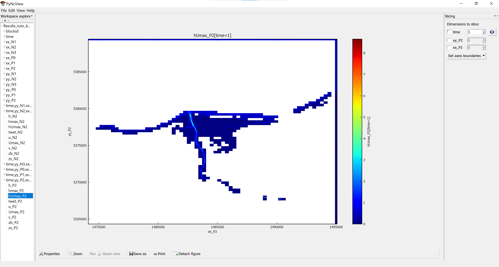

|
BG_Flood
0.8
Documentation (Work-in-progress)
|
|
BG_Flood
0.8
Documentation (Work-in-progress)
|
The objectif of this tutorial is to explain how to use the code BG_Flood to model river flooding. As the code allows rain on grid, we will look at pluvial and fluvial flooding.
This testcase aims to reproduce the flooding event that occured from the 16 to the 18 of July 2021 (a 1 in 50 years flood event). During this event, the Buller river, passing through the town of Westport, on the West Coast of the South Island of Aotearoa New Zealand, get out of its primary bed and flooded the Westport area.
Before begining this tutoral, the user is expected to have downloaded the windows executable or compiled the sources (version > 0.8).
The interface with BG_flood software is done using only a text file:
(This is the name of the input parameter file by defauls, an other name can be use as first variable when lauching BG_Flood.)
This file consists in a list of key words and inputs, separated by a "=" sign. For a full list of the available key words and a further description of this file, please refere to the [manual]{#Manual}.
The DEM, topography or bathymetry file is the only necessary file to be added to BG_param file to run the model.

Different formats can be used for this file ( ASCII: .asc or NetCDF .nc principally). As Netcdf files can contain different variables, the "?" follows by the name of the variable is needed.
Without further information, the code will run will default values for physical parameters and initialisation, Neumann boundaries and no external forcing:

A result files: "output.nc" is created (here opened with the PyNcView)
It contains 2D fields saved regularly in time. It details the blocs information, the time 1D variable, the xx and yy axis and the basic outputs (h,u,v,zb,zs) for a shallow water model (see manual for further description of the variables).
A log file: BG_log.txt (very similaire to the shell outputs) is also created: 
The river are, at this stage, forced by a vertical discharge on a user defined rectagular area:
where the four final numbers are: \( x_1, x_2, y_1, y_2 \), to define the area for the vertical discharge and a text file containing the time-serie of the discharge (first column: time ( \(s\)) from reference time, second column: river discharge in \(m^3s^{-1}\)).

This file is from an observed hydrograph, with data saved every 5min:

For each new river, just add the a similar river input line in the parameter file.
In this code, the time is defined in second, relative to some reference or the start of the simulation by default.
The end of the simulation is prescribed in second as :
The time steps can't be defined by the used, it will be automatically computed as the more restrictive one in the domain by the solver, using the prescribe CFL (Current Friedrich Limiter) value, \( CFL=0.5000 \) by default.
The simulation begin, by default at \( t=0 (s)\), but this can modify using "totaltime":
to begin one hour after the reference time ( used in the forcings for example).
There is two types of outputs:
By default, there is only a map output at the begining and end of the simulation.
The map output can be modify by:
For each TS output needed, a line with the destination file and the postition is needed:
The file contains 5 colums \((t, zs, h, u,v)\) with the value at the nearest grid point (to the position defined by the user).
For a first test, we will modify the resolution and set it to 40m to decrease the computational time:
This the shell output:  It shows that 1 river has been added to the model, and also the time progression with 5 map outputs (in addition to the initial time step).
It shows that 1 river has been added to the model, and also the time progression with 5 map outputs (in addition to the initial time step).
In the outputs, we get the different fields requested, for 6 different times. 
The Time-Serie output is: 
Boundaries condition Boundaries are refered by their position, using "top/bottom/right/left" keywords. They are associated to a boundary type ( 0:wall; 1: Neumann (Default); 2:Dirichlet (zs); 3: abs1d) and possibly a file containing a time serie. In this case, the file name is placed before the type, coma-separated.
In this case, we will use tide boundaries at when at least a part of the boundary is open on the sea, i.e. for the top, left and right boundaries. At the bottom, we will conserve the default value: 1.
In this case, as the boundaries are relatively small compared to the time wave length, we will used the same value along all the boundaries. We will then have only two columns in the file: Time and one elevation. tide_file 
They correspond to a classic time Serie observed offshore of the river mouth.

(If more values, they will be regularly spread along the boundary and the forcing will be the linear interpolation of these values).
Different models from bottom friction are available. By default, the model used is -1 corresponding to a Manning model. Here, we will use the model 1 corresponding to a roughness length (see manual for more information on the Bottom friction models). The associated field (ASC or netCDF) or value must be enter with the key word

Warning: The model allows a roughness heigh / manning number map smaller than the computational domain and will extrapolate outside of the map.
By default, the model is initialised by a plane water surface located at \(z=0.0\).
This water level can be modify, depending of the local mean sea level and the vertical projection used to create the DEM, using:
The model can also be initialised using a restart/hot start. A file containing a least the files zb, h or zs, u and v must be provided, with the steps (and no the time value) to use for the restart.
Some variables can be used to adjust the model (see Manual for more details):
The model allows rain on grid forcing to model pluvial inundations.
A rain intensity in \( mm.h^{-1} \), time and space varying can be forced in the model.
The rain can be forced with a time serie (with uniform values on the domain) or a netCDF file if a spacial file is available:
If the data is given in "rain height", a post-processing to turn it in rain intensity will be needed (at least at this stage of development).
Using the rain on grid forcing will activate all the cells of the domain and will increase the computational time of the simulation. Part of the domain can be "de-activate" (the blocs memory will not be allocated for this area) using different methods:
The code is based on a Block-uniform quadtree mesh. Each block, actually a 16 by 16 cells, is one unit of computation in the GPU. These blocks can have different resolutions (but resolution does not change during the computation at this stage).
The initial resolution of the grid is the resolution of the bathymetry/topographic data. To refine or coarsen the grid, you can weather use the "dx" key word and choose a new resolution for the whole domain; wether use the levels of resolution. The reference level, correponding to the bathymetry resolution will be the level 0. Levels of resolution are then defined in relation to the reference levels using positive integers to increase the resolution or refine and negative integer to coarsen the grid by a multiple of two. For a given level \(n\) , the resolution \(dx_n\) will be: $$dx_n=\frac{dx_0}{2^n}$$
with \(dx_0\) the resolution at level 0.
When refinning using the level implementation, different key words are expected:
The grid can also be unregular with an adaptition of the grid to the model (variables at initialisation step or user-defined refinement map). In this case, the cells will be devided in 4 cells for refinement, or 4 cells merged in one for coarsening. The code will ensure a progressive change of resolution (no cell should have a neighbour with more than 1 level of resolution of difference.)
The different methods of refinement available in the code are called using the key word "Adaptation". The refinement can be based on a classical input variable or a variable calculated during the initialisation:
To refine the grid for this case, we will use the former coarse simulation and create a map for values where hmax is strictly positive (and/or umax,vmax different from zero), after removing the sea area.
Here, the bathymetry map resolution is a 10m resolution ( \( dx_8=10m\)). We will impose:

To use it, the following options need to be added to the param file:
Note_1: In order to optimise the refinement, different bathymetry files can be provided. A higher resolution one with smaller extend can be provided as a second DEM and will be use by the code when refining the grid (the code will use the last entered, having the info available):
Note_2: The code also allows for zone outputs: the output of different zones defined by the user (outputname,x1,x2,y1,y2):
This is the logfile:
In the model output, each resolution is store independently. When open with pyncview, we can visualise each layer. QGIS can merge all these layer togather or a postratement steps will be needed.

An Initial Loss, Continuous Loss model has been implemented in the code (see ILCL page). 
To use it, provide maps for the two coefficient as follow:
#